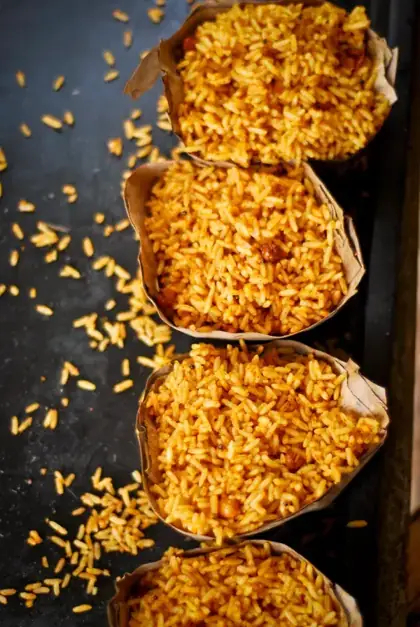

Main course · Popular in South India
Puliyogare
Puliyogare is made with wild tamarind, curry leaves, a favourite in South India.

How do you make puliyogare?
Rice tossed in a thick tamarind paste with sesame, peanuts and curry leaves.
Wild ingredients
- Tamarind (Tamarindus indica): in season January to April
- Curry leaves (Murraya koenigii): in season all year round
Watch the recipe

Video: Colour Talkies on YouTube